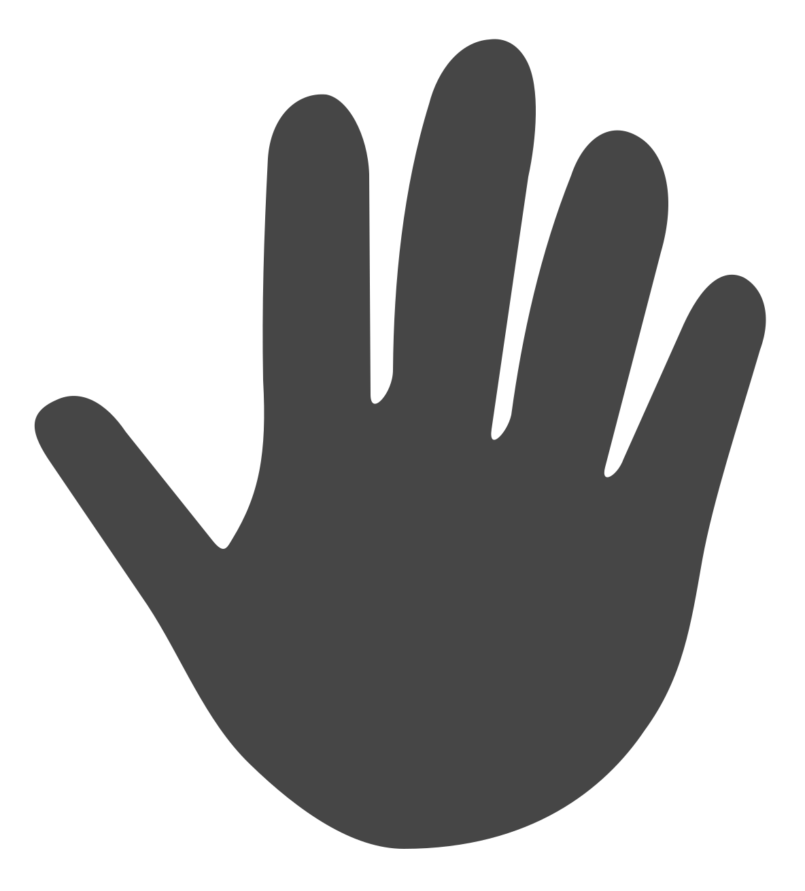

<!doctype html><html lang="zh-CN"><meta charset="utf-8"><meta name="viewport" content="width=device-width,initial-scale=1"><title>魔方计时器 · 手掌轮廓预览</title><style>body{margin:0;background:#151515;color:#aaa;font-family:-apple-system,BlinkMacSystemFont,sans-serif}main{padding:24px;text-align:center}h1{font-size:16px;font-weight:500}section{margin:20px auto;max-width:900px;border:1px solid #292929;background:black;border-radius:16px;padding:20px;box-sizing:border-box}.time{font-family:monospace;color:#00ff12;font-size:76px;font-weight:700;margin:0 0 12px}.hands{display:flex;justify-content:center;gap:80px}.hands img{width:200px;height:200px;object-fit:contain}.tablet img{width:400px;height:400px}.tablet .hands{gap:20px}.label{margin:10px;font-size:12px}footer{font-size:12px;margin:22px;line-height:1.8}@media(max-width:600px){.hands{gap:24px}.hands img{max-width:40vw}.tablet img{height:auto}} </style><main><h1>保持平面剪影风格，左右镜像与触碰颜色共用一条矢量轮廓</h1><section><div class="time">0.00</div><div class="hands"></div><p class="label">手机 · 200pt · 未按下</p></section><section><div class="time">0.00</div><div class="hands"></div><p class="label">手机 · 200pt · 按下</p></section><section class="tablet"><div class="time">0.00</div><div class="hands"></div><p class="label">iPad · 400pt · 未按下</p></section><footer>HTML 矢量预览，非模拟器截图。App 使用相同的贝塞尔曲线，由 SwiftUI Shape 原生绘制。</footer></main></html>
